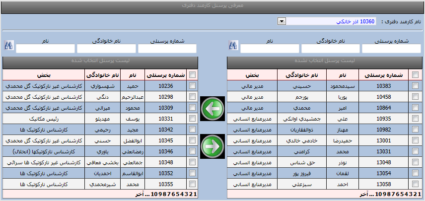

|
معرفی پرسنل کارمند دفتری
|
 
|
|
معرفی پرسنل کارمند دفتری
|
|
معرفی پرسنل کارمند دفتری
در این منو پرسنل زیر مجموعه برای هر کارمند دفتری تعریف می گردد.

برای تعریف پرسنل کارمند دفتری :
ابتدا پرسنل کارمند دفتری را باید انتخاب نمایید (تیک می زنید)و با کلید فلش سبز رنگ از راست به چپ انتقال می دهیم تا به لیست پرسنل کارمند دفتری اضافه گردد.(برای جستجو می توانید از قسمت شماره پرسنلی -نام خانوادگی و نام ،اطلاعات فرد مورد نظر را وارد و کلید جستجو که شبیه دوربین است را کلیک کنید )
انتخاب گروهی : در صورتیکه بخواهیم پرسنل بصورت گروهی منتقل شوند ابتدا باید تیک بالایی کنار شماره پرسنلی را بزنیدتا همه پرسنل قابل مشاهده در صفحه اول بصورت گروهی انتخاب گردند.
انتخاب صفحات مختلف :برای انتخاب صفحه روی اعداد پایین لیست پرسنل (مطابق تصویر فوق) که بصورت 123456....آخر است کلیک نمایید تا نمایش داده شود
افزودن کارمند انتخابی به لیست کارمندان دفتری
حذف کارمند انتخابی از لیست کارمندان دفتری